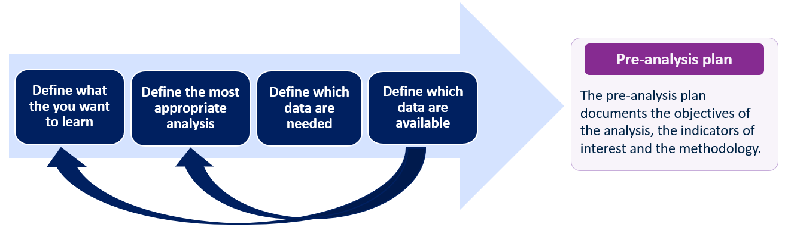
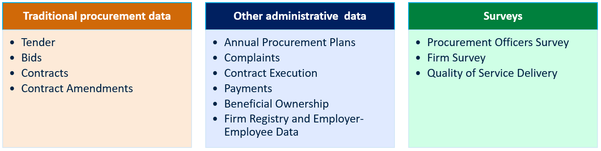

Introduction
Who are we?
Antonia G. Viyachka: Procurement Specialist at the World Bank leading and supervising this project.
Luíza Andrade: Data Scientist at the Developmental Impact Evaluation Group in World Bank specializing in promoting research transparency and reproducibility practices through trainings and code review.
Sushmita Samaddar: Research Analyst at the Developmental Impact Evaluation Group in World Bank, specializing in public procurement, organizational management and governance research
Learning Objectives
Tell us more about yourself. What are your learning goals in this training program and how do you use data analysis in your current work?
Learning Objectives
Participants will thoroughly familiarize themselves with the STATA interface.
Participants will be learn and practice the foundational functions in STATA for data analysis.
Participants will learn how to find the answers and troubleshoot on data analysis and coding questions
Participants will learn about the best practices in conducting data analysis and reproducible research.
What happens after the training?
The training will provide the basics on how to code on STATA and how to do data analysis using public procurement data.
The way to solidify knowledge on data analysis in STATA is to practice, practice, practice!
No data scientist has all the answers, but all data scientists know how to ask for help.
How will the sessions be organized?
The sessions will mostly be hands-on labs where you can work on STATA while learning the basic functions.
- Introduction to the STATA interface, statistical programming 101
- How to create a data map, data management and folder structure
- Exploring and tidying data in STATA
- Importing, cleaning and constructing data
- Data Visualization and Analysis
- Introduction to data visualization in Tableau
- Best practices for data analysis
Where do we start before we start?

Collection of relevant data

Collection of relevant data

Making sense of your data - is it complete?
- Ensure that all the important data fields identified in the pre-analysis plan are available in the collected data.
- Check that most of the observations are non-missing for the pre-identified data fields and, in case of missing values, understand why.
- Ensure that you can identify the level of observation of your datasets. For example, you know which dataset is at procurement process level, contract level or bid level.
Making sense of your data - can it be linked?
- Identify a unique identifier from each dataset. This can be the Contract ID, Tender ID, Bid ID, Product ID etc.
- Check that all datasets have atleast one or more matching unique identifiers and match.
- We will learn more about unique identifiers in the later sessions
Making sense of your data - Does it make sense?
- Check whether the data you are using is correct by making sure some key values and dates make sense.
- For example, you can do this by checking if the contract value is impossibly high (e.g. more than 2 standard deviations from mean) or;
- if the date entries are impossible (e.g. a tender opening date earlier than tender advertisement date).
- Check whether the data structure follows what is expected from the national legal framework.
Construction of relevant indicators